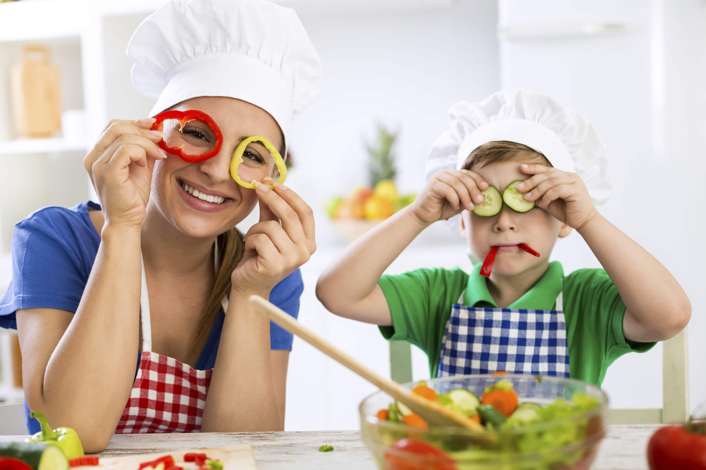
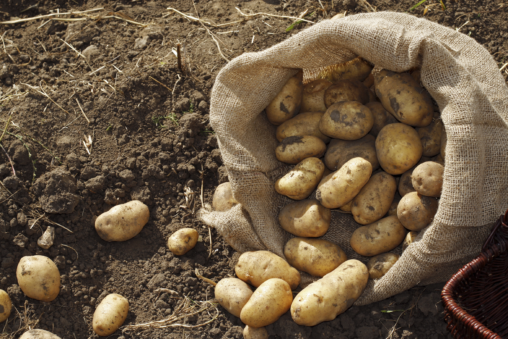
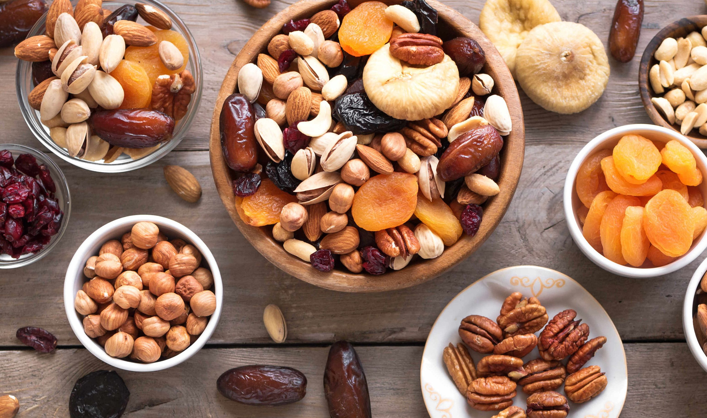
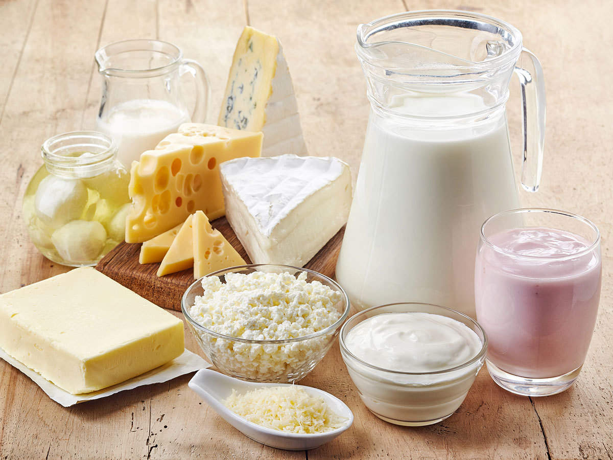

Intro
So,when it comes to gaining weight we think that we can eat any thing like,eating a
lot of sweets,pastries and other confectionaries and take unlimited amount of junk food
but,no we should not gain weight like this because this would soon lead to obesity and to
many diseases.
So to avoid all that this list is gonna tell you how to gain weight properly without leading to diseases
so let's begin.

Potatoes
This humble vegetable is rich in carbohydrates, amino acids and dietary fibre, making weight-gain a healthy affair. Additionally, it is delicious and a favourite amongst kids. You can either mash them up and serve them as a side dish or stir fry them with a little seasoning. You can also treat your little one to the other popular variant of this vegetable – the sweet potato. From sweet potato pancakes to wholesome sweet potato soup, take your pick as per your little one’s preferences. Being the potent sources of starchy carbohydrates, it can help you,to gain weight.

bananas
Bananas are the quickest source of energy and are packed with healthy carbohydrates for weight gain.On average, a banana is known to have around 105 calories, making it the go-to snack for almost everyone and even for active little ones. Additionally, this versatile fruit can be consumed in the form of milkshakes,fruit salads, creamy desserts, or just eaten directly. They are readily available in the Indian subcontinent and are easy on the pocket too. And known as one best food for kids to gain weight.

Nuts
All our previous generations have believed in the healing power of dry fruits. It is one of the most healthy foods for kids to gain weight. Not only are these magic potions packed with vital nutrients, but they are also high in fibre and will give you the much-needed calorie boost. Additionally, they are known for increasing your immunity. You can either grind all the dry fruits together to make a home-made powder that can be served with milk or just have them as snack on while watching TV. From cashews and almonds to dates, apricots and pistachios, there are a plethora to choose from!

Dairy Products
Basic dairy products like milk, cheese and butter are staples in any person’s diet. Milk is loaded with a good dose of calcium which helps in building strong bones and keeping the overall health of yourself in check. Make sure you have at least two glasses of milk per day to reach your goal and gain weight. Instead of having plain milk, you can ensure get your daily intake in the form of cereals or milkshakes. Butter is also the main source of healthy fats that will accelerate the weight-gain process.